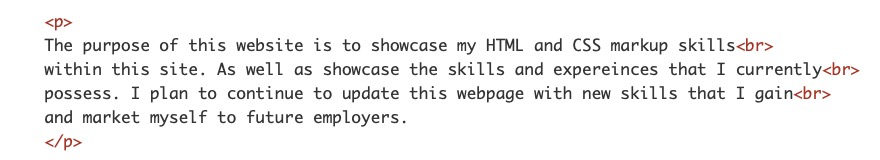
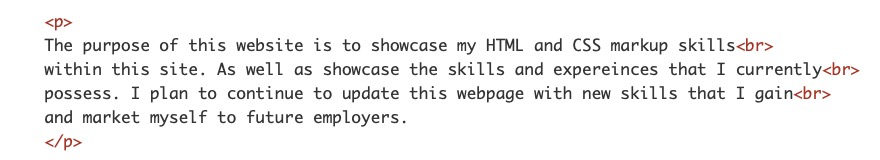
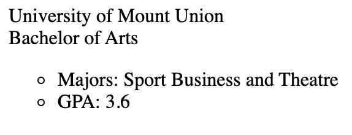
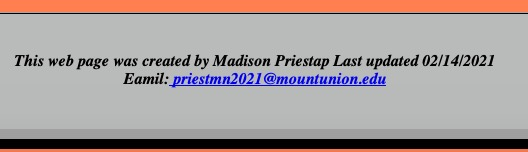

Requirements Page
This link will take you to my overall summary of Porject 3, which includes feedback given from Project 1 thorugh Project 2, summarizing additional edits and other details within the project requirements.
- Chapter 1: Structure
- Title Tag: The title tag is shown in the top of the broswer, above the URL adress.
Title are also on tabs and give identity to the webpage. I used the title tag to ensure
that I identified my website with a proper name. I used the tag within the head tag before
the body tag.


- Chapter 2: Text
- Paragraph Tag: The paragraph tag is used in HTML and CSS as a display to be able
to contain content in an organized and format. I used the paragraph tag to make sure
my content was neatly formatted and I used this tag within the body tag on each page.
 

- Chapter 3: Lists
- Lists Tags: The list tag is important in HTML becuase it provides a way to organize
infomration in a variety of lists. A few lists that HTML offers are ordered lists,
unordered lists, and definition lists. I used the ordered lists to make my content presentaable
within a list format and I did this by using the ordered list tag and then the list attributes
to put the content in list format.
An example of an ordered list is shown below:


- Chapter 4: Links
- Link Tags: The link tag, which is a, helps create links to other sites, and to other
pages on the same site. This element is able to incorporate relative and absolute links as
well. I used the link tag a by using the attribute href="" and embeding an absolute link
within the tag. I decided to use this link because it has value to embedding relative and
absolute links.


- Chapter 5: Images
- Image Tags: Image tags allow a developer to embbed an image to their website
and special attributes are added to the tag as well. I used the image tag by using
the src="" attribute and using the proper format to locate the image. I chose this
tag because images are on every website and provides value to the site.


- Chapter 6: Table
- Table Tags: Tables are a way to keep tabualr information organized and easy
to read efficently. I decided to showcase my college gpa in a table form because
it is something different that some people would not think to share.How I did it
was I used the table take and found out how many rows I needed then I decided
how many columns I needed. Below is a reference picture with the code and broswer
view.


- Chapter 8: Escape
- Escape Characters: Escape characters are used for special characters that
do not appear on a keyboard. Escape allows for the use of the symbols, suc as
trademark, currency symbols, accents, etc. I chose the escape characters
because these are not common tags and they have a different format then
the normal tags used. This tag is used by a specific code for the special
symbols and for the Resumé accent I found the code for it and used
it appropriatley to the word.


- Chapter 10: Style
- Style Tag: Style tag is used for CSS designs within a website and on
specific webpages. The style tag can incorporate colors, text styles, text
size, etc. I incorporated this tag by placing it in the head tag and applying
any CSS style designs within the braces. I choose the style tag because it
shows a different format on how to design specific tags as opposed to HTML.


- Chapter 11: Color
- Color Tag: The color tag is, in my opinion one of the most useful
CSS design tags there is. The color tag allows you to fill in boxes,
background color, and even text color. Color can be used by many different
tags, including rgb, hex code, and the color tag. I choose the color
tag becuase this tag is essential for visual appeal when it comes to
desinging a website.


- Chapter 12: Serif
- Serif Tag: The serif tag is a font style tag that allows to add the
specific style of serif to any text. There is serif and sand serif that
can be used as well for styling. Serif adds sharpnes and definition to
the text. I chose this style becuase I feel that it gives off a
professional feel to my website and it is eyecatching on each page.


- Chapter 13: Borders
- Borders Tag: The border tag is useful to add borders to sections of
conetnt on a webpage.This allows for a clean and sharp visual presence. There
are different styles of borders that can be added along with thickness and shapes.
I choose the border tag, not only because it was easy but it does make a difference
visually if sections have borders on them.


- Chapter 14: CSS Lists
- CSS List Tag: I showed a previous HTML version of the list tag and
decided to show an updated version of how list can be used in CSS. I
wanted to show that their are two versions that are very easy to use.
However, I prefer to use the CSS style because of how easy it is to
implement it into a style sheet. This way also allows to have more options
of styling the bullet points.


- Chapter 15: Fixed Position
- Fixed Position: I added the fixed position tag because I see it as a new layout
tag that can be efficent if someone is trying ti skim a website the navigation bar
will follow them as they scrool down. I showed this by using the position: fixed tag
within my navigation section in my external style sheet.


- Chapter 17: Aside
- Aside Tag: The aside tag is very useful for when someone wants
to hae their website set to a specific layout. The aside tag is set
outside of a section tag. This tag can be put anywhere depending on
where the developer wants to content.